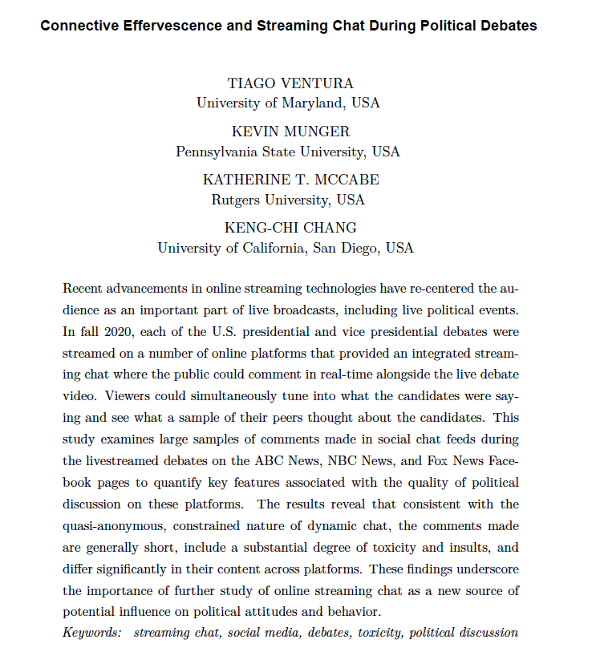
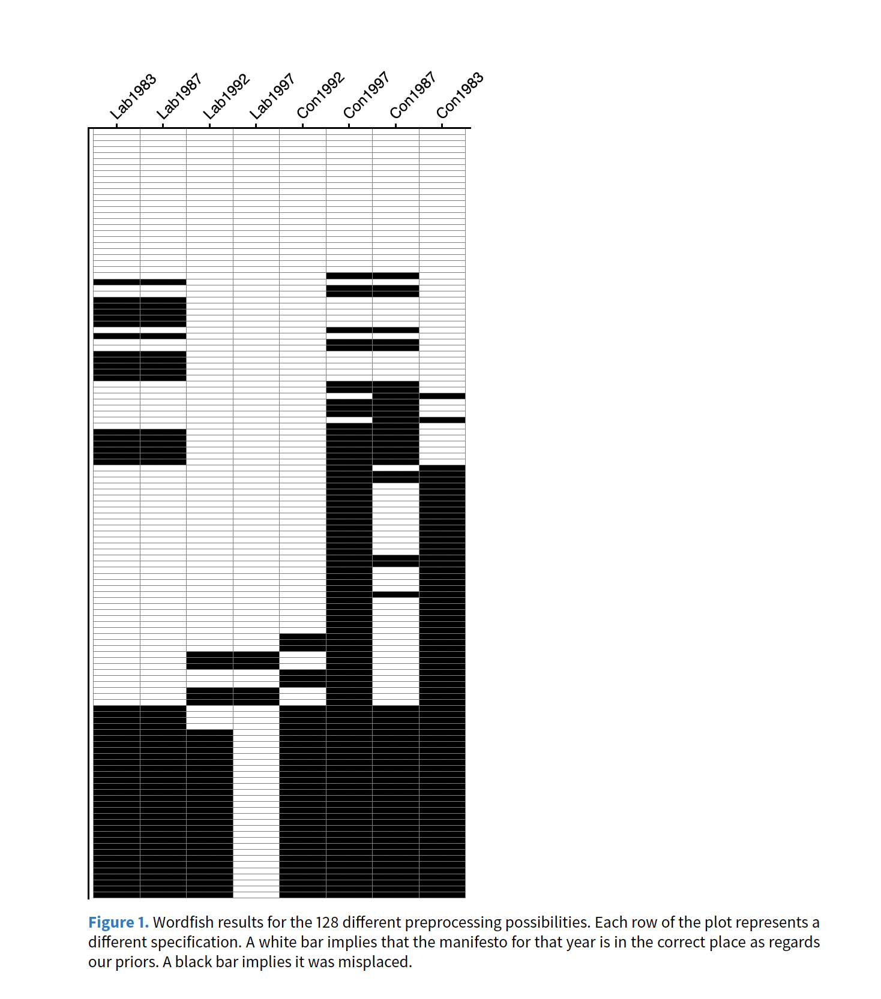
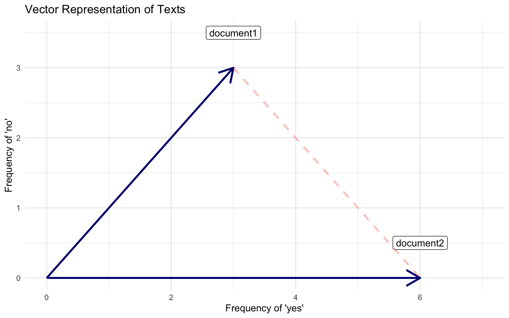
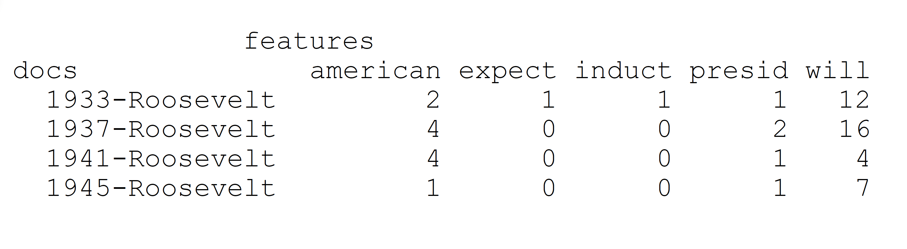
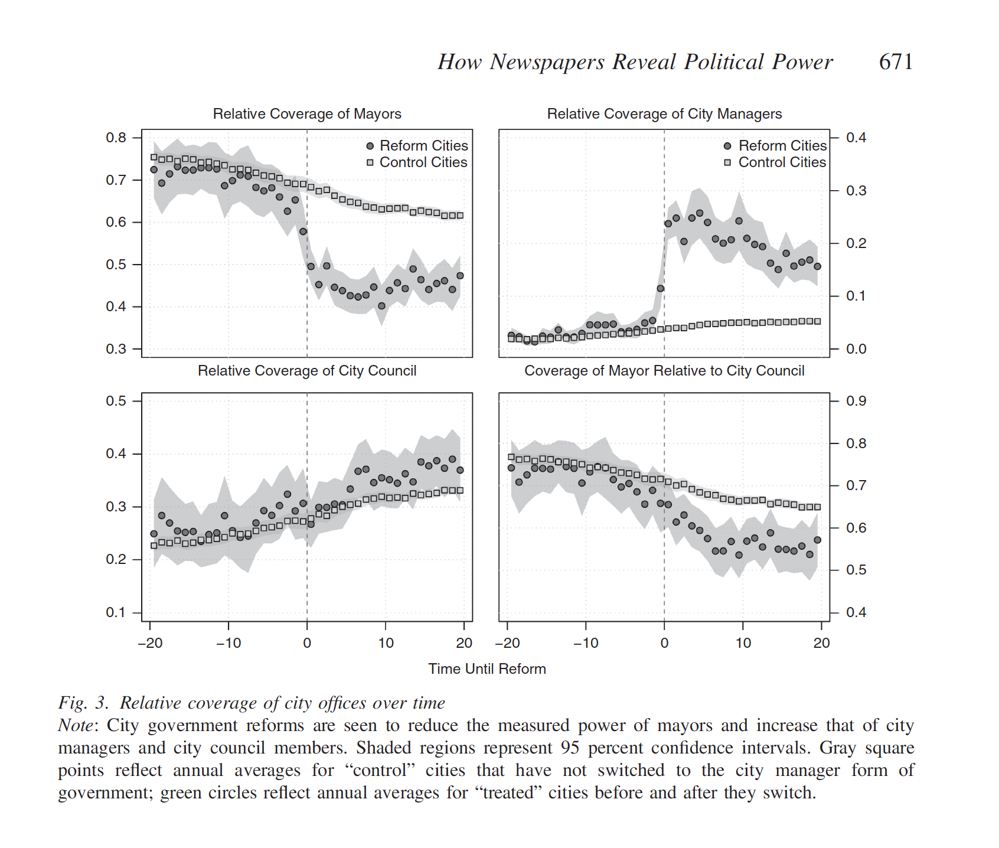

PPOL 6801 - Text as Data - Computational Linguistics
Week 2: From Text to Matrices: Representing Text as Data
Outline
- Challenges of working with text
- Defining a corpus and selecting documents
- Unit of analysis
- Reducing complexity (Denny & Spirling’s article)
- Bag-of-Word, Vector model representation and Document-Feature Matrix
- Application (Ban et. al.’s paper)
Challenge I: Text is High-Dimensional
From Gentzkow et al 2017:
sample of documents, each \(n_L\) words long, drawn from vocabulary of \(n_V\) words.
The unique representation of each document has dimension \(n_{V}^{n_L}\) .
- e.g., a sample of 30-word (\(n_L\)) Twitter messages using only the one thousand most common words in the English language
- Dimensionality = \(1000^{30}\)
- As a matrix: \(M^{1000}_{n_tweets}\)
Challenge II: Text is an unstructure data source
Challenges III: Outcomes live in the Latent Space
In most social science applications of text as data, we are trying to make an inference about a latent variable
- Latent variable: we cannot observe directly but try to identify with statistical and theorethical assumptions.
- Examples: ideology, sentiment, political stance, propensity of someone to turnout
Traditional social science: mapping between observed and latent/theoretical concepts is easier.
We observe/measure country macroeconomic variables, collect survey responses, see how politicians vote.
In text, we only observe the words. Much harder to identify the latent concepts.
Learning goals
Today:
Cover techniques to reduce complexity from text data using a set of pre-processing steps ~ Challenge I
How to represent text as numbers using the vector space model ~ Challenge II
Starting next week we will deal more with inference and modeling latent parameters using text ~ Challenge III
1. Corpus and selecting documents
A corpus is (typically) a large set of texts or documents which we wish to analyze.
- if you can read them in an small amount of time, you should just do it, not TAD
When selecting a corpus, we should consider how the corpus relates to our research question in two aspects:
Population of interest: does the corpus allows us to make inferences about them?
Quantity of interest: can we measure what we plan to?
Sampling Bias: documents are often sampled from a larger population. Are there concerns about sample selection bias?
Most often we use these documents because they were available to us (custom made data). In these cases, considering the three questions above is even more important.
Ventura et. al., Streaming Chats, 2021

Key components
RQ: Measure quality of comments on streaming chat platforms during political debates
Population of interest?
Quantity of interest?
Source of bias?
2. Unit of Analysis
After selecting your documents and converting them to a computer-friendly format, we must decide our unit of analysis
- entire document? sentence? paragraph? a larger group of documents?
Three things to consider in making this decision:
Features of your data and model fit
Your research question
Iterative model
- switching through different units of analysis has a low cost
- allows you to look at the data from a different angle
- provide new insights to your research
3. Reducing complexity
Language is extraordinarily complex, and involves great subtlety and nuanced interpretation.
- We simplify documents so that we can analyze/compared them:
- makes the modeling problem much more tractable.
- complexity makes not much difference in topic identification or simple prediction tasks (sentiment analysis, for example)
- the degree to which one simplifees is dependent on the particular task at hand.
- Denny and Spirling (2019) ~ check sensitivity.
Reducing complexity: steps
Tokenization: What does constitute a feature?
Remove `superfulous’ material: HTML tags, punctuation, numbers, lower case and stop words
Map words to equivalence forms: stemming and lemmatization
Discard less useful features for your task at hand: functional words, highly frequent or rare words
Discard word order: Bag-of-Words Assumption
Tokenization
A first step in any text analysis task is to break documents in meaningful units of analysis (tokens)
Tokens are often words for most tasks. A simple tokenizer uses white space marks to split documents in tokens.
Tokenizer may vary [across tasks]{.red}:
- Twiter specific tokenizer ~ keep hashtags, for example.
May also vary across languages, in which white space is not a good marker to split text into tokens
- chinese and japanese
Certain tokens, even in english, make more sense together than separate (“White House”, “United States”). These are collocations
- statistical testing for collocations ~ PMI(a, b) = log(p(a,b)/p(a)*p(b))
Stop Words
There are certain words that serve as linguistic connectors (`function words’) which we can remove.
- ( the, it, if, a, for, from, at, on, in, be )
Add noise to the document. Discard them, focus on signal, meaningful words.
Most TAD packages have a pre-selected list of stopwords. You can add more given you substantive knowledge (more about this later)
Usually not important for unsupervised and mostly supervised tasks, but might matter for authorship detection.
- Federalist Papers, example. Stop words give away writing styles.
Equivalence mapping
Reduce dimensionality even further!
Different forms of words (family, families, familial), or words which are similar in concept (bureaucratic, bureaucrat, bureaucratization) that refer to same basic token/concept.
use algorithms to map these variation to a equivalent form:
- stemming: chop the end of the words: family, families, familiar ~ famili
- lemmatization: condition on part of speech
- better (adj) ~ good
- leaves (noun) ~ leaf
- leaves (verb) ~ leave
All [TAD/NLP packages[{.red}] offer easy applications for these algorithms.
Other steps: functional words, highly frequent or rare words
Some other commons steps, which are highly dependent on your contextual knowledge, are:
discard functional words: for example, when working with congressional speeches, remove
representative, congress, session, etc...remove highly frequent words: words that appear in all documents carry very little meaning for most supervised and unsupervised tasks ~ no clustering and not discrimination.
remove rare frequent words: same logic as above, no signal. Commong practice, words appear less 5% fo documents.
4. Bag-of-Words Assumption
Now we have pre-processed our data. So we simplify it even further:
Bag-of-Words Assumption: the order in which words appear does not matter.
Ignore order
But keep multiplicity, we still consider frequency of words
How could this possible work:
it might note: you need validation
central tendency in text: some words are enough to topic detection, classificaiton, measures of similarity, and distance, for example.
humans in the loop: expertise knowledge help you figure it out subtle relationships between words and outcomes
Can we preserve the word order? (another pre-processing decision)
Yes
we might retaining word order using n-grams.
- White House, Bill Gates, State Department, Middle East
- we think some important subtlety of expression is lost: negation perhaps
- I want coffee, not tea might be interpreted very diferently without word order.
can use [n-grams], which are (sometimes contiguous) sequences of two (bigrams) or three (trigrams) tokens.
This makes computations considerably more complex. We can pick some n-grams to keep but not all:
\(PMI_{a,b} = log \frac{p_{a,b}}{p_a \cdot p_b}\)
- if p(a,b)=0 ~ log (0) = -inf
- if p(a,b)=p(a)p(b) ~ log(1) = 0
- if p(a,b)<p(a)p(b) ~ log(0<x<1) < 0
- if p(a,b)>p(a)p(b) ~ log(x>1) > 0
Complete Example
Denny & Spirling, 2018

Starting point: No rigorous way to compare results across different pre-processing steps. Adapting recommendations from supervised learning tasks.
Unsupervised vs Supervised Learning?
What is their solution? (no math needed!)
calculate the distance for every pair of documents, and rank the distances
compared to no pre processing, do the pair wise distances again, and get which document pair changed kth position, where k=1 for the pair that changed the most.
Build vector Vm_i^ with the position of the pairwise distance k affected in every other m combination. So Vm_1_1 contains the position of the changes in parwise distance on every other combination other than m=1 for the most changed document in m_1.
their words: vmk = the rank difference for pair k between specification i and all others.
Another example with 3 documents, Vm1_1 = (1m2, 1m3), indicates that the document the changed the most in m1 is also the same in m2 and m3.
pretext score: mean over k (mean of V_m_k)
- Too much work? Substantive knowledge out of the table?
5. Vector Space Model
To represent documents as numbers, we will use the vector space model representation:
A document \(D_i\) is represented as a collection of features \(W\) (words, tokens, n-grams..)
Each feature \(w_i\) can be place in a real line, then a document \(D_i\) is a point in a \(W\) dimensional space
Imagine the sentence below: “If that is a joke, I love it. If not, can’t wait to unpack that with you later.”
Sorted Vocabulary =(a, can’t, i, if, is, it, joke, later, love, not, that, to, unpack, wait, with, you”)
Feature Representation = (1, 1, 1, 2, 1, 1, 1, 1, 1, 1, 2, 1, 1, 1, 1, 1)
Features will typically be the n-gram (mostly unigram) frequencies of the tokens in the document, or some function of those frequencies
Now each document is now a vector (vector space model)
- stacking these vectors will give you our workhose representation for text: Document Feature Matrix
Visualizing Vector Space Model
Warning: package 'ggplot' is not available for this version of R
A version of this package for your version of R might be available elsewhere,
see the ideas at
https://cran.r-project.org/doc/manuals/r-patched/R-admin.html#Installing-packagesWarning: 'BiocManager' not available. Could not check Bioconductor.
Please use `install.packages('BiocManager')` and then retry.Warning in p_install(package, character.only = TRUE, ...):Warning in library(package, lib.loc = lib.loc, character.only = TRUE,
logical.return = TRUE, : there is no package called 'ggplot'Warning in pacman::p_load(ggplot, tidyverse): Failed to install/load:
ggplotWarning: Using `size` aesthetic for lines was deprecated in ggplot2 3.4.0.
ℹ Please use `linewidth` instead.
Visualizing Vector Space Model
In the vector space, we can use geometry to build well-defined comparison measures between the documents (more about this next week)

6. Document-Feature Matrix

Source: Arthur Spirling TAD Class
Application
Ban et. al. 2019, How Newspapers Reveal Political Power.

Purely descriptive
Simple measure just by counting words.
Theorethically-driven: measure that capture a theorethically relevant concept.
\[ \small \text{Coverage of Mayor}_{it} = \frac{\text{Mayor}_{it}}{\text{Mayor}_{it} + \text{City Manager}_{it} + \text{City Council}_{it}} \]